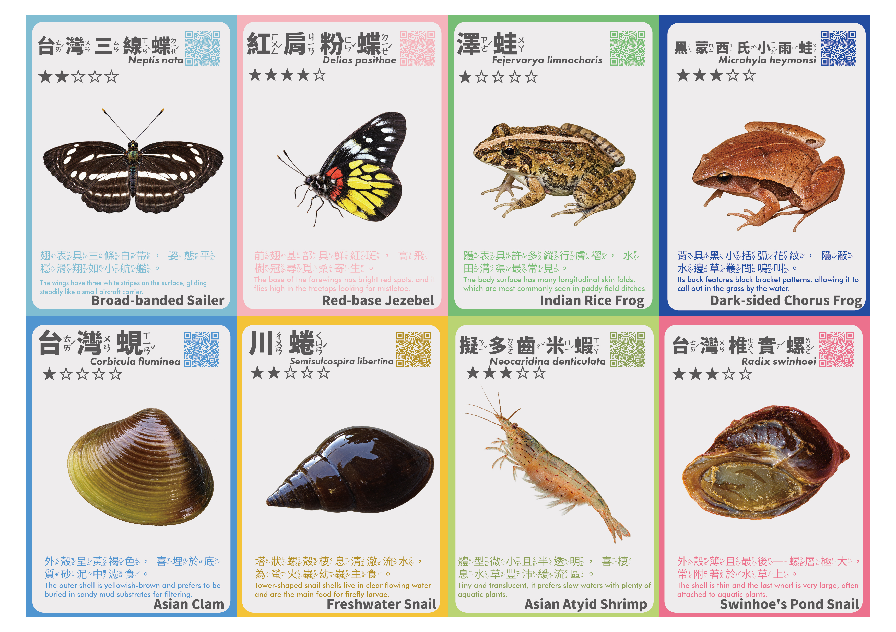
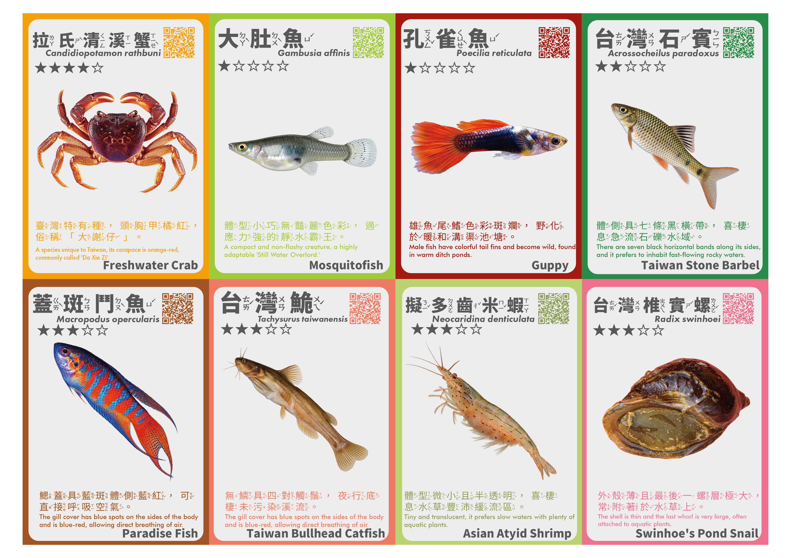
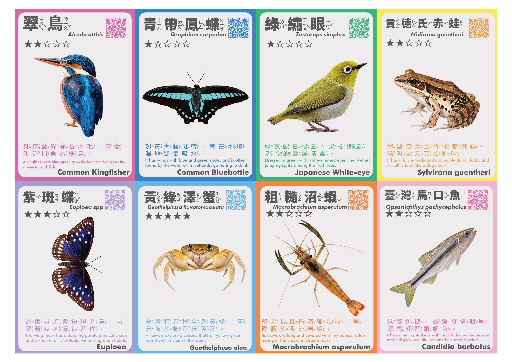
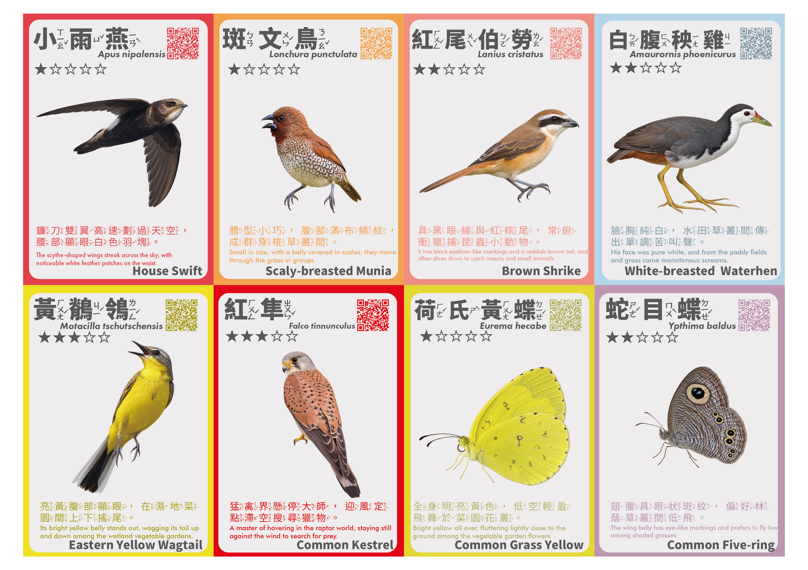

Physical Card Set
商品資訊整理中
每張卡收錄中文名、學名、星級稀有度與中英文生態描述，掃描 QR Code 可進入線上圖鑑。
- 售價
- 公布後更新
- 內容物
- 將於販售前公布
- 購買方式
- 7-ELEVEN 賣貨便
Gongguan Ecology Cards
把田野裡遇見的鳥、蝶、蛙與水域生物，收進一張張可以掃描探索的實體小卡。




Physical Card Set
每張卡收錄中文名、學名、星級稀有度與中英文生態描述，掃描 QR Code 可進入線上圖鑑。